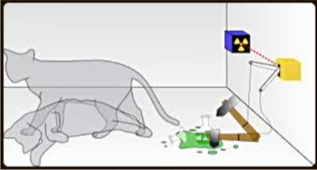

Situation temporelle :
- 1 : Les quanta ont été découvert en 1900
- 2 : Le spectre quantifié a été découvert en 1913


- 3 : La fonction d'onde a été découverte entre 1925 et 1927
- 4 : Le principe de complémentarité a été découvert en 1927
